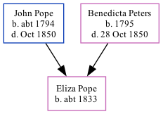

Eliza Pope c1833 -
[ Home ] | [ Calendar ] | [ Surnames Index ] | [ Family History ]The child of John Pope (a builder) and Benedicta Peters, Eliza Pope, the first cousin four-times-removed on the father's side of Nigel Horne, was born in Kent, England c. 18331 and baptized in Folkestone, Kent, England on Jun 2, 1833. On Jun 6, 1841, she lived at Fancy Street in Folkestone1.
Parents
- John Isaac was born c. 1794
- Benedicta was born in 1795
Citations
- 1841 England, Wales & Scotland Census - Findmypast (was age 7 and the daughter of the head of the household)
Media
Kent Baptisms - GBPRS/CANT/B/96146825
England Births & Baptisms 1538-1975 - R_885256397
Family Tree
Generated by Ged2Site. Last updated on Jul 20, 2025